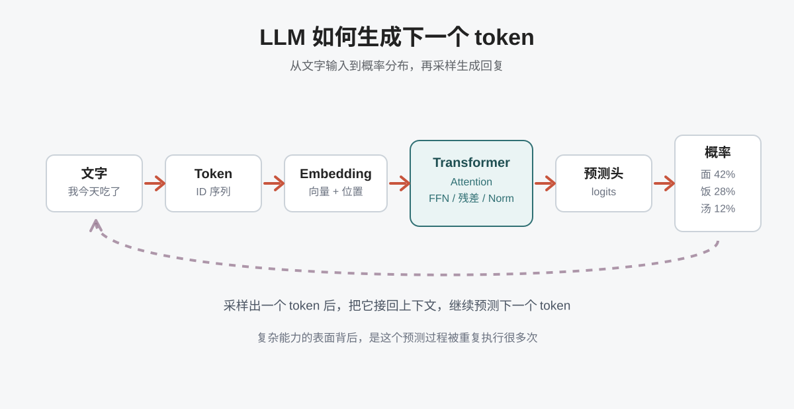
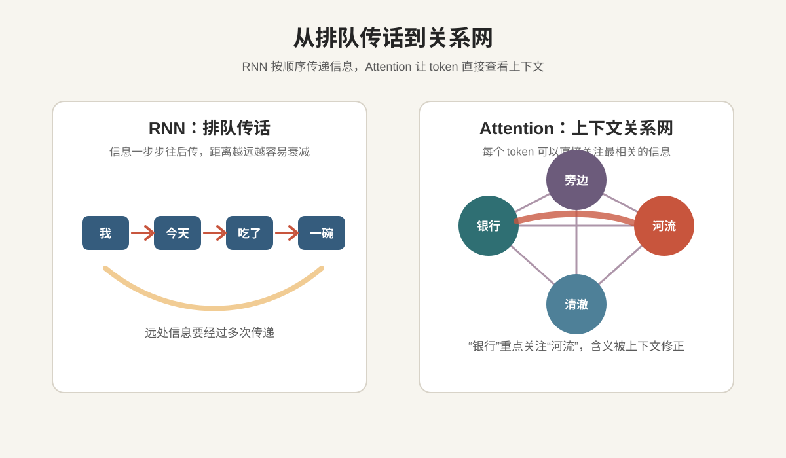
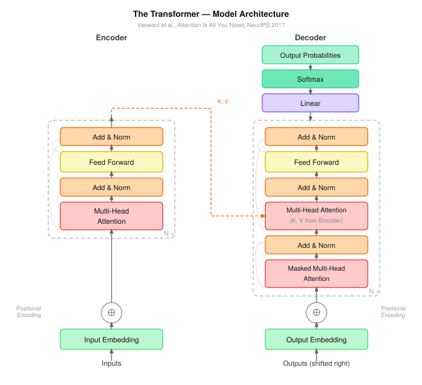

今天我们看到的 LLM，可以写文章、写代码、翻译、总结，甚至帮人拆解复杂项目。但往底层追问一步，会遇到一个很朴素的问题：
LLM 本质上一直在做一件事：给定前面的 token，预测下一个 token。
"我今天吃了一碗"后面可能接"面"、"饭"或"汤"。模型要根据上下文，判断哪个候选更合理。要预测得准，就不能只看最后几个字——它必须理解前面所有信息之间的关系。
比如这两句话："苹果发布了新产品"和"我吃了一个苹果"。同样是"苹果"，一个是公司，一个是水果。单看这个词，模型无法确定含义。它必须看上下文。

所以，语言模型要解决的核心问题不是"背了多少知识"，而是：
如何根据上下文，判断每个词在当前句子里的含义。
Transformer 的故事，就从这里开始。这篇文章会拆清楚四件事：
一、语言理解，本质上是关系理解
我们读一句话，并不是孤立地看每个字。读到"它"，会下意识往前找指代；读到"因为"，会预期后面出现原因；读到"虽然"，会等待一个转折。
人理解语言时，脑子里一直在建立关系：这个词和前面哪个词有关？这个代词指向谁？这个动作是谁发出的？
对模型来说也是一样。模型内部，每个词会被编码成一个向量，但这个向量一开始是静态的——它不知道自己在这句话里该代表什么含义。
难点在于：同一个 token 在不同上下文里，含义应该不同。
文本不是一串散落的词，而是一张关系网。这就是序列建模最难的地方。
二、早期方法：顺序传话的瓶颈
在 Transformer 之前，处理文本常见的方案是 RNN（循环神经网络）。它的逻辑很自然：文字按顺序出现，模型就按顺序读。先读第一个词得到一个状态，再读第二个词把前面的状态带过来——就像"排队传话"。
这个方法符合文字的线性顺序，但有两个明显瓶颈。
一是长距离依赖。如果文本很长，前面的信息要经过很多步才能传到后面，中间很容易被压缩、稀释，甚至丢掉。比如：
那个昨天在会议上提出新方案、后来又被产品团队反复讨论的工程师，今天终于把原型做出来了。
读到"做出来了"时，我们需要知道主语是谁。答案在很前面："那个工程师"。对人来说，这不难——我们会自然回头看。但对按顺序传递信息的模型来说，距离越远，越难保留。
二是无法高效并行。因为第 10 个词的计算依赖第 9 个词，第 9 个词又依赖第 8 个词，模型必须一步一步来。数据规模越大，这种串行处理就越拖慢训练效率。

三、Attention：不排队传话，直接互相查看
Attention（注意力机制）的直觉非常简单：
当模型处理某个 token 时，不依赖前一步传来的压缩信息，而是让它直接查看上下文里的其他 token。
从"排队传话"变成"开一张共享白板"。每个词都写在白板上，当前这个词想理解自己，就去看整句话里的其他词，判断哪些和自己最相关。比如：
小明把书放进书包，因为它太重了。
当模型读到"它"时，需要判断指的是"书"还是"书包"。Attention 的做法是让"它"直接和前面的词建立联系，为这些关系分配不同权重——相关的词权重大，不相关的权重小。
再看一个例子：
银行旁边的河流很清澈。
这里的"银行"更应该理解成河岸，而不是金融机构——因为后面出现了"河流"。Attention 让 token 根据上下文线索，动态调整自己的含义。
Transformer 里的 Attention，具体叫 Self-Attention（自注意力）。"Self"的意思是：不是拿一个句子去看另一个句子，而是让同一句话里的 token 彼此建立关系。
一句话进入模型后，每个 token 都会问：为了理解我自己，我应该关注这句话里的哪些 token？
这家创业公司发布的新模型，在数学推理任务上表现很好。
当模型处理"模型"时，它可能关注"发布""数学推理任务""表现很好"；当模型处理"创业公司"时，它可能关注"发布的新模型"。同一句话里，不同 token 需要关注的信息不一样。Self-Attention 不给整句话一个固定理解，而是为每个 token 动态构建自己的上下文。
四、Transformer 的突破：把关系网变成核心架构
有了 Attention 之后，Transformer 做了一件关键的事：把 Attention 放在了模型的核心位置。
以前的模型沿着一条线处理文本，Transformer 则把文本看成一张可以相互连接的关系网。每个 token 都可以和其他 token 建立联系，每一层 Transformer 都会更新这些联系。
浅层可能学到比较简单的关系，比如词语搭配、局部语法；更深的层可能学到更抽象的关系，比如指代、因果、转折、任务意图。
一开始，"苹果"只是一个 token。经过多层上下文计算后，它会逐渐带上更多信息：这里是水果还是公司？是主语还是宾语？
如果把一个 Transformer Block 拆开，大致有两个核心动作：
- Attention：让 token 之间互相交流，收集上下文信息。像开会，大家交换信息。
- FFN（前馈网络）：让每个 token 独立消化这些信息。像散会后各自思考，把信息加工成自己的理解。
此外还有残差连接和 LayerNorm——前者让原始信息不会在多层之后丢失；后者让每层数值稳定，避免训练崩掉。
五、为什么 Transformer 更适合大规模训练？
Transformer 真正重要的地方，是它非常适合规模化。
- 更擅长处理长距离关系。Token 之间可以直接建立联系，远处的信息不需要一站一站传过来。
- 更适合并行训练。一段文本里的 token 可以同时参与计算，充分利用现代 GPU 的并行能力。
- 可以稳定堆叠很多层。配合残差连接、LayerNorm、FFN 等组件，Transformer 可以扩展成参数量极大的模型。
这三点合在一起，为后来的 LLM 打下了基础。GPT、Claude、Gemini、DeepSeek 基于 Transformer，真正的意思是：它们都继承了"用注意力机制建模上下文关系"这一基本思想。
把完整推理流程串起来，大概是这样：
文字 → Token → Embedding + 位置编码
→ 多层 Transformer Block（不断更新 token 表示）
→ 最终上下文向量 → 预测头
→ 下一个 token 的概率分布 → 采样 → 重复这里的位置编码也很关键——Attention 本身不感知顺序，如果没有位置信息，模型很难区分"猫吃鱼"和"鱼吃猫"。位置编码就是在告诉模型：每个 token 出现在句子的哪个位置。
六、先抓直觉，再看公式
很多人第一次学 Transformer，会直接撞上 Q、K、V、Softmax、Multi-Head Attention、LayerNorm、残差连接这些名词。这些概念当然重要，但一开始就钻公式，很容易迷路。
更好的方式是先抓住一条主线：Transformer 要解决的问题，是让模型高效理解上下文关系。
RNN 像排队传话，信息要一步步往后传；Attention 像共享白板，每个 token 可以直接查看其他 token；Transformer 则把这种"互相查看、动态加权、更新表示"的机制，变成了可以大规模训练的模型架构。
理解了这一点，再看 Q、K、V 就会自然很多：
- Query：当前 token 想找什么？
- Key：其他 token 能提供什么线索？
- Value：真正被拿来汇总的信息是什么？
这些名词都在服务同一件事：让模型判断，当前 token 应该关注上下文里的哪些信息。

它让模型从"按顺序读文本"，走向了"在上下文关系网里理解文本"。
下一篇，我们就可以正式拆开 Attention，看看模型到底是怎么计算"该看哪里"的。